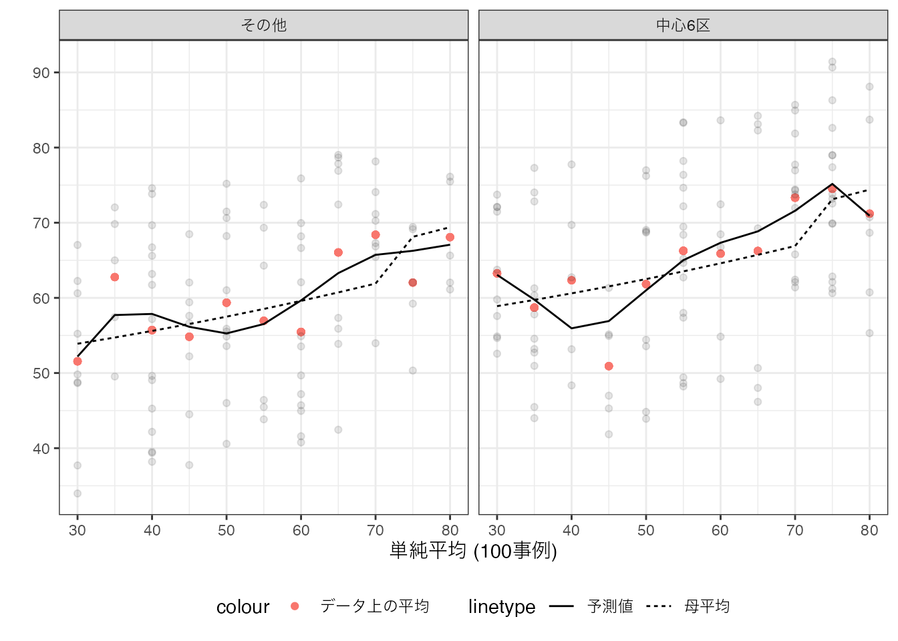
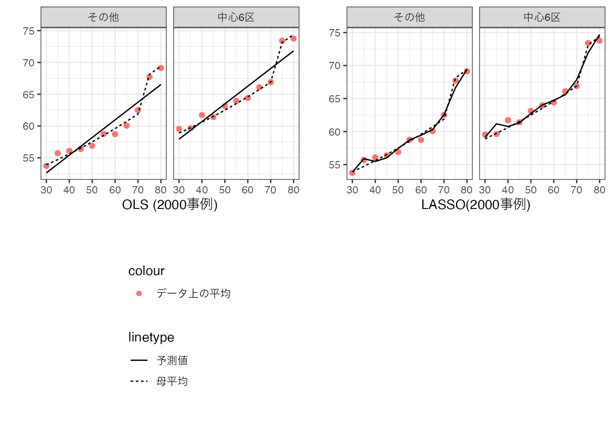
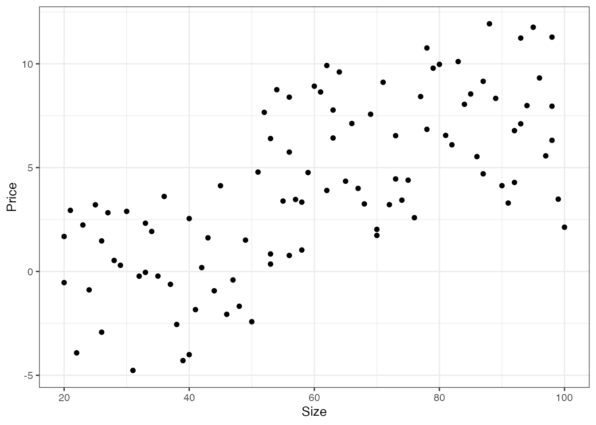
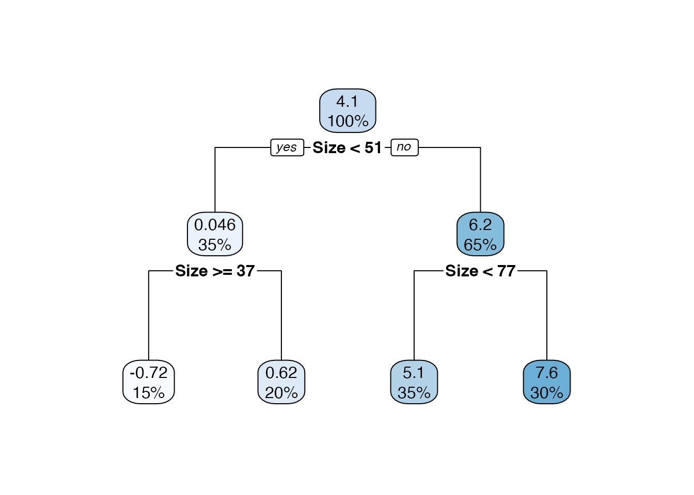
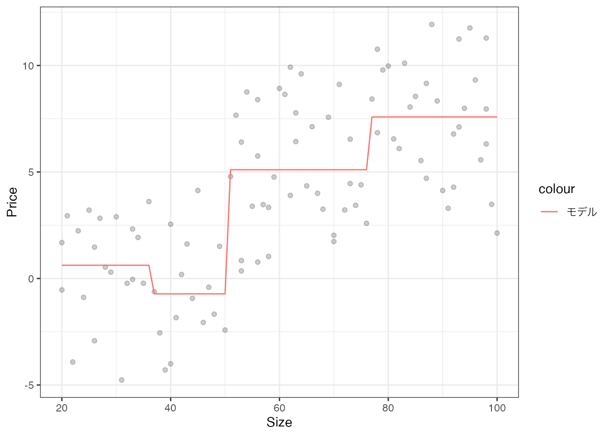
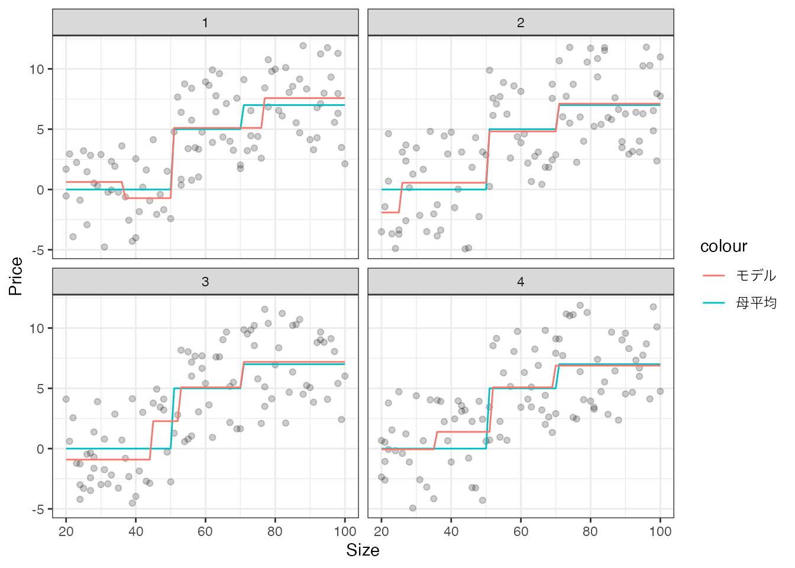

3 予測モデルの推定
3.1 現実
3.2 ML
3.3 Getting Started
3.4 予測問題
定義: 欠損情報 \(Y\) を、観察できる変数 \(X\) から予測するモデル \(g(X)\) を構築する
視聴履歴やいいね数 \((X) \rightarrow\) 好む未視聴動画 \((Y)\)
メールの文名や件名 \((X) \rightarrow\) 迷惑メール \((Y)\)
事業の内容や財務状況 \((X) \rightarrow\) デフォルトリスク \((Y)\)
\(Y,X\) が共に観察できるデータを活用できれば、推定方法がある程度確立されている (教師付き学習)
3.5 アイディア
過去の \(Y-X\) の間の定量的なパターンを、データから抽出し、予測に利用する
「1平米広い部屋は100万円高い価格で取引されがち」など
- そのデータ上にのみ偶然現れたパターンに注意する
予測の対象となる新しい事例と過去の事例(データ)との間に、一貫性が必要
3.6 データ分割による評価
予測モデルの性能をどのように評価するか
実際に実装し、運用すれば、そのうち性能がわかるが…
- 遅すぎる場合も多い
データをランダム２分割(Training/Test)に分割し、Trainingデータのみでモデルを作り、Testで評価する
典型的には、Testデータについて、平均二乗誤差 \[(Y - 予測値)^2の平均値\]
3.7 イメージ
3.8 典型的誤解
機械学習を用いて推定すれば、予測性能が高いモデルが獲得できる
複雑な現象を予測するためには、複雑なモデルの方が望ましい
Big dataを用いれば、理想的な予測モデルを推定できる
予測性能が悪いモデルは、役に立たない
3.9 母集団を用いた整理
- 母集団: 論点整理を目的とした概念
3.10 母集団
手元のデータに含まれる事例は、母分布(集団)から抽出されたと想定する
本講義では、ランダムに選ばれるケースに集中する
- Random Sampling
予測対象も、母分布からランダムに選ばれるとする
一般にデータと母分布は、完全一致しない
3.11 例
ユーザーの需要調査(どのようなサービスを望むか)
データ: サービス利用者の中からランダムに選ばれた200名 (例: 20代が2割)
母集団: 全サービス利用者 (例: 20代が2.2割)
予測対象: \(X\) (年齢など)のみ判明している利用者
不動産取引価格の予測モデル
データ: 2022年第二四半期のすべての取引事例
母集団: 潜在的な全取引
予測対象: まだ取引されていない物件
3.12 イメージ
3.13 数値例: データ

3.14 数値例: 予測モデル

3.15 数値例: 予測モデル
3.16 数値例: 予測モデルと母平均
- ここから想像の世界

3.17 不透明性 (Uncertainly)
データ分析を含む事例分析の一般的課題
独立した分析チームに同じ市場/社会の分析を依頼したとしても、同じ結論に到達し得ない
- 誰がやっても、「水は100度で沸騰する」という結論を再現できる理科の実験とは対照的
3.18 Sampling / Model Uncertainly
観察する事例が人によって異なる (Sampling uncertainly)
- 伝統的なデータ分析における主たる関心
事例の要約方法(モデル化)が属人的で、不透明 (Model uncertainly)
多くの教科書で直接的な言及を避けてきた問題
- 「理論や背景をしっかり踏まえて、適切なモデル化を行うべし」以上の提案が難しい
3.19 Sampling Uncertainlyの軽減
問題: データから観察できない価格決定要因の”偏り”が、データ固有の特徴を生み出す
対策: 多くの事例を集計(モデル化)し、傾向把握を行う
- 初歩的な方法: よく似た労働者も高賃金を得ているか確認する
3.20 機械学習の利点
決定木を含む機械学習の手法は、明確な記述に基づくデータ主導のモデル化を行う
- Model Uncertainlyが軽減される
3.21 機械学習の問題点
データ主導のモデル生成は、Sampling uncertainlyを”複雑化”する
- データに応じてモデルが大きく変化しうるため
伝統的な理論的性質(中心極限定理など)が適用できず、信頼区間などが近似計算できない
\(Y\) に近い値を得ることが目標である予測問題では、通常大きな問題にならない
むしろモデル全体の予測性能を評価することが重要
3.22 数値例: 決定木
- 4名の分析者(ID 1-4) が独立してデータを収集し、決定木でモデルを推定したとすると、
3.23 数値例: Size \(= 40\) で分割

- データとは無関係に、size = 40 で予測値が”誤って”変化する
3.24 モデルの評価
3.25 予測モデルの評価: 理想編
どんな予測もまぐれあたりしうる
- 平均的にうまく行くモデルを採用したい
予測モデルを母分布に適用して評価する: 典型的には二乗誤差の母平均値を用いる \(E[(Y - g(X))^2]\)
3.26 予測モデルの評価: 現実編
母分布は観察できないので、母分布に適用した際の予測性能は”推定する必要”がある
- 母分布からランダムに選ばれた事例でテストしたい
最も典型的な評価法は、データ分割: データをランダムに2分割 (訓練/テストデータ)し、訓練データのみでモデルを推定し、テストデータで評価
3.27 イメージ
3.28 補論: モデルを使い続けられるか?
モデル推定に用いるデータの母分布と、予測対象の母分布が異なれば、予測性能は悪化する
高性能モデルでも、時代の変化/大きな社会的ショックの発生等の結果、性能が悪化しうる
- 通常の設備と同様に、経年劣化/破壊されうる
定期的に予測性能を計り直し、再推定する必要がある
- Concept-Driftと呼ばれる
3.29 極端なモデルの推定
- 予測モデルの推定の原理を理解するために、極端な推定方法で何が生じるのか理解する
3.30 理想の予測モデル
もし母集団をすべて活用して、モデル推定できるのであれば、理想の予測モデルは母平均 \(E[Y|X]\)
- 予測誤差を平均二乗誤差で測定するのが前提
「各グループ内での平均的傾向」よりも優れた予測はあり得ない
3.31 完璧な予測は可能か?
予測不可能な部分 \(Y - E[Y|X]\) が発生
- 削減不可能な誤差
予測対象となる母集団(社会)、\(Y/X\) が決まった時点で自動的に定まる
\(X\) 内で個人差がある現象の予測は難しい
- 人間行動やその相互作用で決まる現象 (例: 消費、貯蓄、出生、就業、賃金、等)は大きい傾向
3.32 予測モデルの推定: 現実
母集団は観察できないので、データで置き換える必要がある
単純なモデルを推定すると、母平均の複雑さを捉えられない
複雑なモデルを推定すると、データが偶然持った特徴を母平均の特徴と混同してしまう
3.33 現実的な方法: 単純平均法
- 単純な平均取引価格を予測値とする

3.34 現実的な方法: 丸暗記法
- 各\(X\) について、データ上の平均値を予測値とする

3.35 複雑なモデルは望ましいのか?
丸暗記モデルは非常に複雑なモデルを生み出し、望ましいように思える
現実は複雑
推定に用いたデータとの矛盾はない
- 予測値とデータ上の平均値は、必ず一致する
一般に予測性能は極めて悪い
- 少数の事例のみで計算れた平均値は、\(X\) 以外の決定要因の偏りを反映してしまう
3.36 補論: 丸暗記が有効な場合
\(X\) 以外に \(Y\) の決定要因がなければ、丸暗記は有効
- 例: 判例予測、コンピュータの動作予測
人間行動については、\(X\) 以外の無数の決定要因が存在
例: “双子”でも違う人生を歩む
丸暗記に向いていない
3.37 中庸なモデルの推定
多くの応用で平均値は単純すぎ、丸暗記は複雑すぎる
決定木については、最大分割回数などを変更することで、単純平均と丸暗記法の間を移行できる
3.38 モデル選択/集計
決定木の深さが異なれば、予測モデルは異なる
複数のモデルを”試作”し、予測性能を測定、最も性能が良いモデルを選ぶのは一つの方法
決定木については、複数のモデルを試作し、その予測結果を集計することがより有効な場合が多い
- モデル集計/アンサンブル法などと呼ばれる
3.39 概要
複雑なモデルを推定すると、母平均から大きく乖離した事例(ハズレ値)の影響を強く受ける
予測結果を安定されるために、大量の予測モデルを作り、その平均値を最終予測とすることが有効 (Bagging)
一部の変数の使用を確率的に禁止することも併用できる (RandomForest)
3.40 イメージ: Bagging
- Bootstrap法を用いて、予測モデルを大量に作る (500-5000個程度)
3.41 RandomForest の利点
Bootstrapは、“ハズレ値”を含まないデータとそれを用いたモデルも生成される
- ハズレ値の影響を軽減できる
変数の一部を確率的に使用できなくすることで、モデル間で用いる変数の多様性が促進される
- より多くの変数の情報が活用できる
注: 実際にはモデル単位ではなく、サンプル分割ごとに、(元々の変数数のsquare root個)ランダムに使用禁止する
3.42 数値例: Random Forest

3.43 Big dataは優れた予測モデルを保証するか?
「Big data \(=\) サンプルサイズが多い」、のであれば、完璧な予測モデル \(g(X) = Y\) を保証しない
- 削減不可能な誤差 \(Y - E[Y|X]\) が存在するため
理想的な予測モデル \(g(X) = E[Y|X]\) は保証できるか?
伝統的な方法 \(=\) 極めて強い仮定のもとでのみ可能
多くの機械学習 \(=\) 緩やかな仮定で可能
3.44 数値例: 伝統的アプローチ(5000事例)
研究者が、「Size \(= 40\) で分割する」と決定
- 推定されうるモデルを限定する
3.45 数値例: Random Forest with large sample (5000事例)
3.46 まとめ
実際/理想/完璧な予測モデルの区別が重要
理想の予測モデル: \(g(X)=E[Y|X]\)
- 個人差があれば、完璧な予測 \(g(X)=Y\) は不可能
限られたデータから推定されたモデルは、理想の予測モデルとはならない \(g(X)\neq E[Y|X]\)
- 機械学習を用いて、近づけることは可能
予測に使う前に、テストデータを用いた性能調査が必須